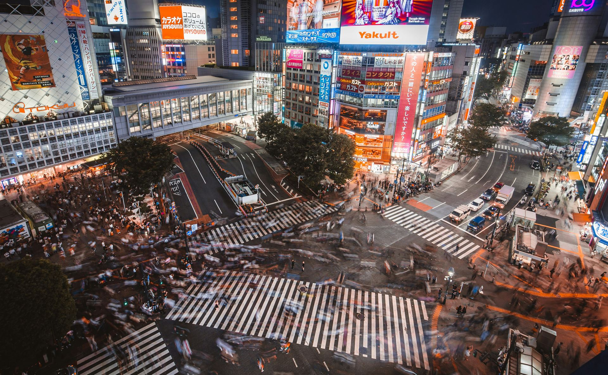
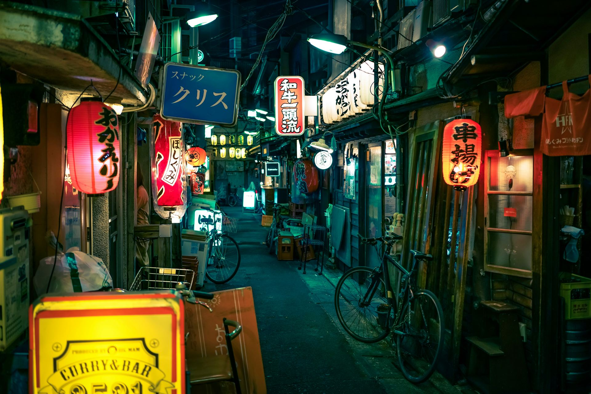
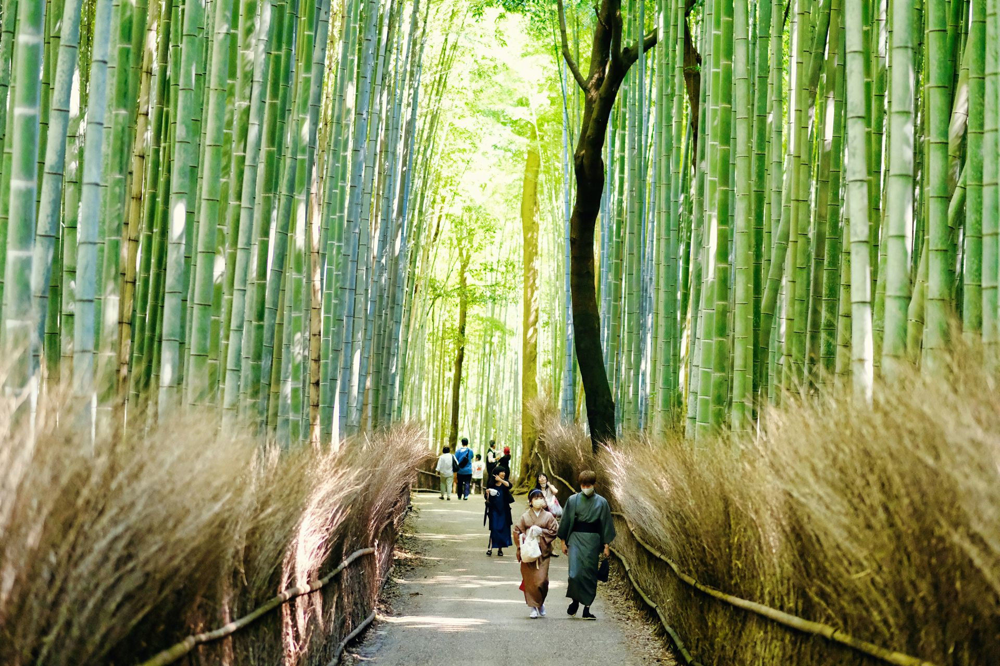
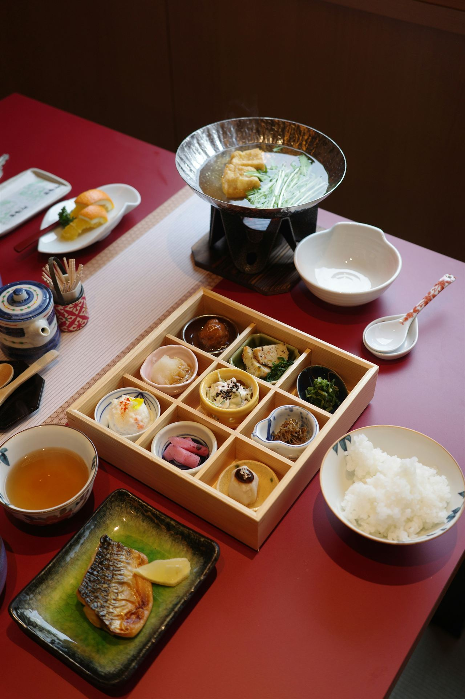
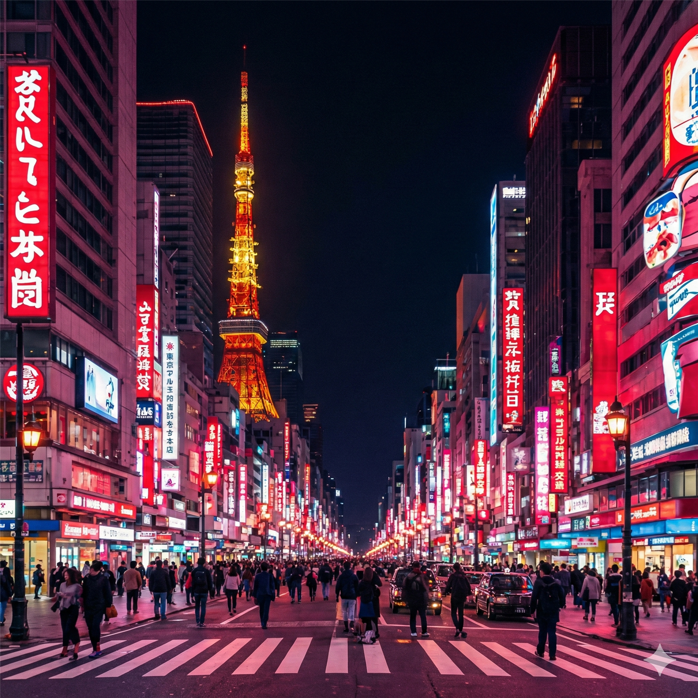

和
JAPAN
Timeless Harmony
Discover a land where ancient temples stand beside futuristic cities, where every season paints a new masterpiece.
Discover a land where ancient temples stand beside futuristic cities, where every season paints a new masterpiece.



Japan is more than a destination; it is a journey through time. From the neon-lit energy of Tokyo to the spiritual silence of Kumano Kodo, we invite you to discover a country built on harmony, respect, and breathtaking beauty.
World-Class Hospitality (Omotenashi culture)
Seamless Travel (Shinkansen & Public Transit)
Safest Destination (Peace of mind for travelers)
Japan offers a captivating journey through time – from serene temples shrouded in morning mist to neon-lit streets pulsing with innovation. Experience a culture that honors its 2,000-year heritage while pioneering the technologies of tomorrow.
The first permanent capital, where Buddhism flourished and colossal temples were born.
Kyoto becomes the imperial capital, ushering in an age of refinement and artistic expression.
The samurai culture peaks under the Tokugawa shogunate, Tokyo (Edo) rises.
Japan opens to the world, rapidly modernizing while preserving cultural identity.
Leading global innovation in technology, robotics, and sustainable living.
From the refined artistry of Kaiseki to the steaming soul of a street-side Ramen shop.


Experience the journey of a decade by following our expert-designed itineraries across Japan.
Explore routes →Get comprehensive visa information, essential travel tips, and personalized recommendations.
Explore routes →